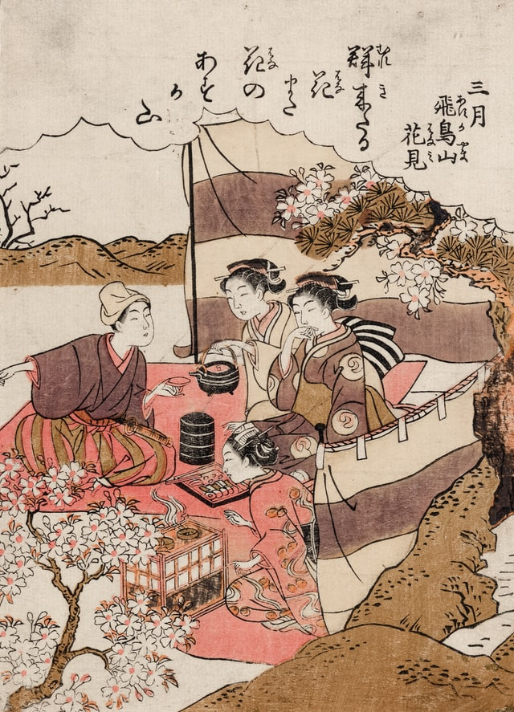

Selon les informations que les archéologues et les historiens ont, il semblerait que l’archipel japonais soit
habité depuis le VIIIème millénaire avant notre ère. A l’époque, ses habitants étaient des asiatiques du
paléolithique. La première période majeure connue du Japon est celle de Jomon. Les Japonais étaient alors des
chasseurs-ramasseurs ou des pêcheurs. Ils étaient capables de créer des cabanes en bois et des poteries.
Mais c’est à la période des Tumulus que l’histoire japonaise prend un tournant.
A cette époque, des cavaliers-guerriers provenant de Corée débarquent au Japon. Ils prennent alors possession
de toutes les terres.
Très vite, ils asservissent les paysans et mènent une guerre contre les populations des zones reculées. A
partir de cette époque, les régions sont organisées en états, gérés par des chefs de communauté.
En 538, Yamato est sous le régime monarchiste.
Il s’en suit des guerres de clans et des tentatives de conquête. Après avoir essayé de conquérir la Corée, les
Japonais voient l’empire se retourner contre lui. Un millénaire plus tard, les Européens découvrent le Japon
et débutent le commerce avec l’archipel.
Entre 1868 et 1874, le Japon fait face à de nombreux changements, opérés par l’empereur Mutsuhito. Il divise
le pays en arrondissements. La population est, elle, séparée en classes. Les samouraïs perdent le droit du
sabre. Enfin, l’empereur donne la propriété des terres aux paysans et permet l’achat et la vente en toute
liberté. En 1889, l’empereur met en place une Constitution. Elle implique la création de la Chambre des pairs
et de la Chambre des représentants élus.